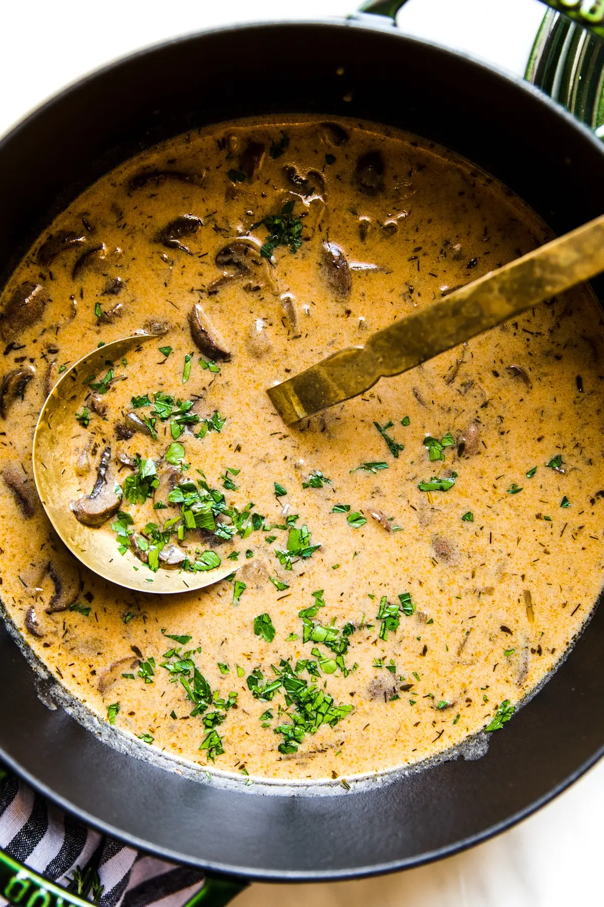

Hungarian Mushroom Soup

Creamy, tasty, simple
Ingredients
- 4 tbsp butter
- 2 cups onions, chopped
- 1lb mushrooms, sliced
- 2 cupschicken or vegetable stock
- 1/2 cup dry white wine
- 2 tsp dried dill
- 2 tsp minced fresh thyme leaves
- 2 tsp paprika
- 2 tbsp soy sauce
- 1 cup whole milk
- 3 tbsp flour
- 1/4 cup sour cream
- 2 tbsp lemon juice
- 2 tbsp fresh italian parsley
Instructions
- In a heavy pot or Dutch oven, sauté the onions and mushrooms in butter over medium heat until onions are soft and translucent, about 15 minutes.
- Add the dill, thyme, paprika, broth, soy sauce and white wine. Bring the soup to a simmer and cook until the liquid reduces by half.
- Meanwhile, in a small bowl, whisk the flour into the milk until smooth. Add the flour-milk mixture to the soup and cook until the soup begins to thicken, about 10 more minutes.
- Turn the heat down to low and slowly stir in the sour cream and lemon juice.
- Garnish the soup with parsley and serve hot.
Enjoy!